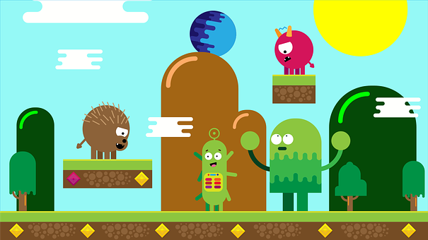

Platformers
Platformers as a genre is a stable of the gaming community. Most of the modern day Nintendo and Sega games are based around platforming games in the past. The most popular franchise is the Mario franchise which helped ignite the genre to the place that it is today. Platformers is one of those genres that can be connected to many different sub-genres. For example, a platformer can be an action platfomer, like mario, and a platformer puzzle/collectable like the famous Banjo-Kazooie games.

This here is a link to a list of some of the most famous platforming games as voted by players and professionals: Click Here!